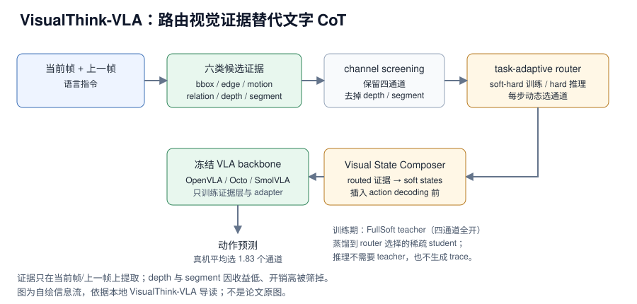

VisualThink-VLA 把 VLA 的“先想再动”从自由文本 CoT 改成紧凑、可路由、可审计的视觉证据：冻结 VLA backbone，只训练证据提取、router 和轻量 adapter。本地章节转述的头条数字是：BridgeData V2 单步延迟从 ECoT 的 8.377s 降到 0.367s（约 22.8x），成功率 89.49%（BaseVLA 75.37%、ECoT 85.09%）；内部接口对比平均成功率 90.10%、平均延迟 0.395s；真机平均完成时间 25.6s（FullSoft 30.2s），平均只选 1.83 个证据通道。以上为章节转述的论文与仓库口径，未在本机复测。
来源约定：本文事实只取自本仓库 VisualThink-VLA 导读，没有用模型记忆补写论文细节。
标注约定：【官方】指本地章节转述的论文/仓库作者报告；【章节】指本地章节自己的归纳。
版本：arXiv2605.30011v1，2026-05-28 提交；代码为 2026-05 初始公开的 code skeleton；代码 commit：章节未给；查阅日期 2026-11-01。
1. 论文与官方资源
| 资源 | 入口 | 说明 |
|---|---|---|
| 论文 | arXiv:2605.30011 / HTML / PDF | 方法、benchmark、延迟与真机实验 |
| 源码 | DCDmllm/VisualThink-VLA | MIT License；evidence extraction、router、adapter、评测脚本 |
| 权重 | 章节未给 | README 明确不托管训练 checkpoint 与感知模型缓存 |
| 项目页 | 章节未给 | 没有独立项目页；GitHub README 兼作说明入口 |
| 数据集 | 章节未给 | 只给 VisualEvidence-Set 的 754.7k 条构建结果，未给下载地址 |
论文题目：VisualThink-VLA: Visual Intermediate Reasoning for Effective and Low-Latency Vision-Language-Action Policies；作者包括 Mingjian Gao、Wenqiao Zhang、Yuqian Yuan、Yang Dai、Binhe Yu、Zheqi Lv、Haoyu Zheng、Jiaqi Zhu、Zhiqi Ge、Zixuan Wan、Siliang Tang、Yueting Zhuang；arXiv：2605.30011v1；版本：2026-05-28 提交；代码 commit：章节未给；查阅日期：2026-11-01。
代码状态：GitHub README 写明 2026-05 初始公开 code skeleton，包含 evidence extraction、router training、adapter training、VisualEvidence-Set 构建和评测脚本；OpenVLA checkpoint、感知模型缓存、原始机器人数据、特征 manifest、训练 checkpoint 和评测日志不放进仓库，需要外部准备。【官方】
2. 核心问题：机器人该用什么形式“先想一下”
一句话：VisualThink-VLA 重新分配的是“中间推理的载体”——不生成自然语言 CoT，而是从当前帧、上一帧和指令里提取视觉证据，由 router 每步只选需要的通道，再注入冻结 VLA 预测动作。【章节】

图 1：VisualThink-VLA 的六通道证据、筛选、路由与冻结 VLA 注入流程。自绘，依据本地导读；不是论文原图。
对比主流路径：文字 CoT（先生成解释再出动作）→ 紧凑视觉证据 + 动态通道路由 + 冻结 VLA。
- 节省了什么：不解码长文本，不需要在线图像编辑模型，也不需要微调整个 VLA backbone；推理时不需要 VisualEvidence-Agent 或 trace 字段。
- 保留了什么：原 VLA 的视觉语言预训练与动作头；证据仍以 token / soft state 形式进入 action decoding。
- 代价是什么：要额外跑证据提取器（bbox / edge / motion / relation），router 与 adapter 需要监督；证据通道选错会直接误导动作。
- 读者该学什么：中间推理不必是文字；把“看什么”做成可路由、可反事实审计的接口，可能比让模型多说一段话更适合闭环控制。
3. 模型结构与张量流
3.1 Visual Evidence Interface：六个候选，四个部署
| 通道 | 作用 | 直观例子 | 是否部署 |
|---|---|---|---|
bbox | 目标位置和检测框 | 多物体抓取时定位红碗、蓝杯、目标方块 | 是 |
edge | 边界和接触几何 | 插入、推拉、沿边缘接触、旋转时估计轮廓 | 是 |
motion | 短时程变化 | 判断物体是否被推动、当前阶段是否变化 | 是 |
relation | 指令相关空间关系 | “放到盒子左边”“把杯子放进盘子里” | 是 |
depth | 单目几何深度 | 估计前后距离和局部几何 | 否 |
segment | 物体区域 mask | 分割目标区域和干扰区域 | 否 |
channel screening 的结论是：depth 与 segment 在该论文的 benchmark 设置中收益较低、开销较高，容易增加 side-perception overhead，因此最终 operational evidence bank 只保留 bbox + edge + motion + relation。【官方】这不是说深度和分割永远无用，而是说在这套接口与评测里性价比不够。
输入是当前 RGB 帧、上一帧 RGB 和语言指令；输出是每个通道的紧凑证据向量。章节没有给证据向量的维度、提取器网络、训练数据或单通道延迟。
3.2 冻结 backbone 与外挂式推理层
README 明确写到 base VLA 保持冻结。整体是：
Frozen VLA backbone
+ evidence extractor
+ task-adaptive router
+ Visual State Composer / routed adapter
-> action prediction
evidence extractor 把原始观测变成紧凑证据向量；router 选择通道；Visual State Composer 把 routed channel vectors 投影成少量 learned visual states，插入到 action decoding 前。推理时不生成文字，不调用在线图像编辑模型，也不输出人类可读长解释。【章节】
这与 G0.5 的路线不同：G0.5 把结构化 CoT 与动作 token 放进同一条自回归流；VisualThink-VLA 尽量避免文字 token 解码，把中间推理放在视觉 soft states 上。
3.3 Task-Adaptive Router：soft-hard 掩码与 FullSoft teacher
router 预测每个证据通道的选择概率，再通过 hardening operator 转成推理时的硬路由 mask。也就是说，每一步不是固定打开四个通道，而是动态选择。【章节】
训练时直接用硬路由比较脆，因此论文采用 soft-hard collaborative masks：训练阶段混合 soft / hard route，推理阶段使用 hard route。为了让稀疏路由继承 dense evidence 的能力，还训练一个 FullSoft teacher：teacher 每步看四个部署通道，student 在 router 选择的稀疏通道上学习，通过 teacher-student distillation 保留性能。【章节】
Dense evidence（FullSoft）：信息充分，但慢，且可能引入干扰。 Sparse routed evidence：快，干扰少，但训练不稳、容易漏关键信息。 FullSoft teacher + routed student：dense 提供容量，sparse 学会按需选择。
这是全文最值得借鉴的设计：路由不是单纯剪枝，而是用一个 dense teacher 给 sparse student 兜底。章节没有给 router 结构、温度、hardening 阈值、蒸馏损失权重或 teacher 的训练步数。
3.4 Visual State Composer
Composer 把 routed channel vectors 投影成少量 learned visual states，并在 action decoding 前插入。章节把它描述为“轻量 soft states”，不是完整分割图、深度图或密集 side cue；具体 token 数、插入层、是否 cross-attend 到动作 query，章节未给。【章节】
读者读代码时应重点确认三件事：证据向量在哪个维度与 VLA hidden state 对齐；routed mask 是乘在通道维度还是 token 维度；被 mask 掉的通道是置零、丢弃还是保留但不算 loss。这三点决定“路由”到底是真稀疏还是只做了加权。
4. 实验结果
4.1 八个 benchmark 的控制对比
评测集包括 BridgeData V2、Fractal、RoboTurk、LIBERO-Object、LIBERO-Goal、LIBERO-Spatial、LIBERO-Long 和 UT Austin MUTEX。相比 matched BaseVLA re-evaluation，VisualThink-VLA 在 8 个 benchmark 中有 7 个成功率提升。【官方】
| Benchmark | BaseVLA | VisualThink-VLA | 延迟对比 | 备注 |
|---|---|---|---|---|
| BridgeData V2 | 75.37% | 89.49% | 0.345s → 0.367s | ECoT 为 85.09% / 8.377s |
| Fractal | 章节未给 | 章节未给 | 章节未给 | 只给“7/8 提升”的汇总 |
| RoboTurk | 章节未给 | 章节未给 | 章节未给 | 同上 |
| LIBERO-Object | 章节未给 | 章节未给 | 章节未给 | 同上 |
| LIBERO-Goal | 章节未给 | 章节未给 | 章节未给 | 同上 |
| LIBERO-Spatial | 章节未给 | 章节未给 | 章节未给 | 同上 |
| LIBERO-Long | 章节未给 | 章节未给 | 章节未给 | 同上 |
| UT Austin MUTEX | 章节未给 | 章节未给 | 章节未给 | 同上 |
读法：BridgeData V2 是章节唯一给全数字的 benchmark；其余只能确认“参与了评测且多数有提升”，不能引用具体分数，也不能把 89.49% 当成八套平均。matched BaseVLA re-evaluation 说明对比是在同一评测协议下重跑的，不是直接抄旧论文表格。【章节】
4.2 真机闭环
| 项目 | 章节给出的内容 |
|---|---|
| 机器人 | PIPER NERO 7-DoF 机械臂 + 固定外部 RGB 相机 |
| 任务类型 | multi-object pick-place、relation-sensitive placement、contact-sensitive reorientation、two-stage compositional task |
| 对比结果 | 四类任务都超过 BaseVLA；三类任务超过 FullSoft |
| 平均完成时间 | 25.6s（FullSoft 30.2s） |
| 平均证据通道数 | 1.83 |
章节没有给每类任务的成功率、试验次数、初始状态分布或失败案例。因此“四类都超过 BaseVLA”是方向性结论；25.6s 对 30.2s 的完成时间差可以读，但不能拆成推理时间与执行时间。
来源：本地 VisualThink-VLA 导读 §9。
5. 消融实验
5.1 中间接口形式：文本、密集证据、FullSoft、稀疏路由
| 接口 | 平均成功率 | 平均延迟 | 读法 |
|---|---|---|---|
| Prompt-text evidence | 章节未给（只说有提升） | 1.428s | 文本证据有效但太慢 |
| Heavy dense evidence | 章节未给 | 0.592s | 密集 side cue 比文本快，但仍重 |
| FullSoft（四通道全开） | 89.83% | 0.470s | dense teacher 的容量上限参考 |
| VisualThink-VLA（稀疏路由） | 90.10% | 0.395s | 更快且平均成功率略高于 teacher |
这是全文最关键的一组消融：稀疏路由不只是省计算，平均成功率还略高于 dense teacher，章节给出的可能解释是过滤了部分无关或冲突证据。【官方】收益幅度是 0.27 个百分点，不能据此声称路由普遍优于 dense；它只说明在这个设置下没有付出成功率代价。
5.2 Backbone portability
| Backbone | 成功率提升 | 延迟增加 | 说明 |
|---|---|---|---|
| OpenVLA | +16.37 | 约 0.05–0.10s | VisualEvidence-Set test split |
| Octo | +10.87 | 约 0.05–0.10s | 同上 |
| SmolVLA | +11.95 | 约 0.05–0.10s | 同上 |
读法：三个基座的绝对成功率章节未给，因此只能读“相对提升”，不能排序三个基座的最终性能。+16.37 对 OpenVLA 的增益明显高于另外两个，但章节没有解释原因；可能与他们选择的证据提取器、adapter 容量或基座接口有关，需实测。
读者该不该复用：如果现有 VLA 已经冻结且不便重训，外挂证据层 + router 是低侵入方案；如果基座本身可全参微调，先比较“全参微调”与“冻结 + 证据层”的性价比。章节没有给全参微调对照。
来源：本地 VisualThink-VLA 导读 §6、§9。
6. 延迟与显存怎么读
| 设置 | 延迟 | 口径 |
|---|---|---|
| BaseVLA | 0.345s | BridgeData V2 单步 |
| VisualThink-VLA | 0.367s | 同上 |
| ECoT | 8.377s | 同上 |
| VisualThink-VLA（内部接口对比） | 0.395s | 平均延迟 |
| FullSoft | 0.470s | 平均延迟 |
| Prompt-text evidence | 1.428s | 平均延迟 |
| Heavy dense evidence | 0.592s | 平均延迟 |
按章节数字直接相除：
$$
\frac{8.377}{0.367} \approx 22.8
$$
也就是标题里的约 22.8x 加速。测量协议：章节没有给 GPU 型号、batch size、热身次数、重复次数、取中位数还是均值，也没有说明输入是否已预处理在 GPU 上。因此这些数字只能做同章节内部的相对比较，不能当作可移植的绝对延迟。
区分：0.367s 是单步策略延迟，不是完整请求延迟（含图像采集、证据提取、通信）或重规划间隔。1000 / 0.367 ≈ 2.7Hz 只说明策略调用频率上限，不等于动作执行频率或端到端反馈频率。真机完成时间 25.6s 是任务级指标，混合了推理、执行、失败重试和场景重置，不能反推单步延迟。
来源：本地 VisualThink-VLA 导读 §1、§6、§9。
7. 训练资源与卡数
章节没有给 GPU 数、优化器步数、有效 batch、每卡 microbatch、梯度累积、学习率、warmup、EMA 或冻结策略，只给了训练阶段与数据产物。因此无法填出标准训练配方表，也无法用 B_eff = N_GPU × B_micro × N_accum 反推有效 batch。
能确认的训练链路：
evidence extraction：当前帧 + 上一帧 + 指令 → 每通道证据向量 router training：feature manifest + route supervision → router checkpoint（硬路由 mask） FullSoft adapter training：feature manifest + OpenVLA → dense teacher adapter VisualThink adapter training：feature manifest + router + teacher → routed student adapter VisualEvidence-Set 构建：manifest + router + student → 754.7k 条 visual-thinking instructions faithfulness audit：manifest + model + trace → 反事实审计结果
数据侧：VisualEvidence-Set 含 754.7k 条 visual-thinking VLA instructions，可用于 route supervision、trace-supervised adapter refinement 和 counterfactual faithfulness tests；trace 只在训练和审计时使用，推理时不需要生成。【官方】
三级复现的可行性：
- 理解与评测：部分可行。代码 skeleton 与脚本入口在，但 OpenVLA checkpoint、感知模型、数据 manifest 和训练产物都要外部准备；仓库未提供 checkpoint，无法直接复现表格。
- 训练链路：部分可行。可以在自己的小数据上跑通 evidence extraction → router → adapter → audit，验证字段与路由 mask，但不能对齐论文的超参。
- 完整训练：不可行。缺少 GPU 数、步数、batch、学习率与数据构建细节，不能声称可复现论文训练。
来源：本地 VisualThink-VLA 导读 §7、§10。
8. 代码阅读顺序
| 顺序 | 路径 | 阅读重点 |
|---|---|---|
| 1 | scripts/extract_visual_evidence.py | 当前帧 + 上一帧 + 指令如何变成 bbox / edge / motion / relation 证据 |
| 2 | configs/evidence_router.yaml | router 输入字段、通道数、soft/hard 混合与输出 checkpoint |
| 3 | scripts/train_evidence_router.py | route supervision 从哪来、hardening 在哪一步发生 |
| 4 | configs/visualthink_adapter.yaml | adapter 容量、插入位置、蒸馏损失配置 |
| 5 | scripts/train_visualthink_adapter.py | --mode full 与 --mode visualthink 的差异；teacher/gate 参数 |
| 6 | scripts/build_visualevidence_set.py | trace 字段、route 标签与 754.7k 条数据的构建逻辑 |
| 7 | scripts/audit_faithfulness.py | counterfactual 通道移除如何影响动作 |
坑（章节明确提示或可直接推出）：
- 仓库不含 OpenVLA checkpoint、感知模型缓存、原始机器人数据、feature manifest、训练 checkpoint 和评测日志；
path/to/openvla必须自己替换。 train_visualthink_adapter.py的--mode visualthink依赖--gate_checkpoint_dir与--teacher_adapter_dir，顺序错了会退化成普通 adapter。- 证据通道不是六个都用；代码里若仍保留
depth/segment分支，要确认它们只用于诊断或筛选。 - 章节没有给 commit，复现记录中应自行固定一个 commit hash。
9. 从 checkpoint 开始复现
以下命令来自章节转述的官方 README，未在本机验证；路径与参数需按仓库当前 commit 替换。仓库未提供 checkpoint，所以“从 checkpoint 开始”只能从自己训练的 router/adapter 开始。
9.1 环境
git clone https://github.com/DCDmllm/VisualThink-VLA cd VisualThink-VLA conda create -n visualthink-vla python=3.10 -y conda activate visualthink-vla pip install -r requirements.txt pip install -e .
9.2 先看单帧证据提取
python scripts/extract_visual_evidence.py \ --image_path path/to/current.png \ --prev_image_path path/to/previous.png \ --instruction "pick up the red bowl" \ --output_dir outputs/evidence_one
这一步只验证“当前帧 + 上一帧 + 指令 → 证据向量”的格式，不验证策略性能。
9.3 router 与 adapter
python scripts/train_evidence_router.py \ --feature_manifest outputs/features/feature_manifest.jsonl \ --config configs/evidence_router.yaml \ --output_dir outputs/router python scripts/train_visualthink_adapter.py \ --mode full \ --feature_manifest outputs/features/feature_manifest.jsonl \ --model_path path/to/openvla \ --config configs/visualthink_adapter.yaml \ --output_dir outputs/fullsoft python scripts/train_visualthink_adapter.py \ --mode visualthink \ --feature_manifest outputs/features/feature_manifest.jsonl \ --model_path path/to/openvla \ --config configs/visualthink_adapter.yaml \ --gate_checkpoint_dir outputs/router \ --teacher_adapter_dir outputs/fullsoft \ --output_dir outputs/visualthink
9.4 构建审计集并做反事实检查
python scripts/build_visualevidence_set.py \ --feature_manifest outputs/features/feature_manifest.jsonl \ --gate_checkpoint_dir outputs/router \ --visualthink_checkpoint_dir outputs/visualthink \ --output_path outputs/visualevidence/visualevidence_set.jsonl python scripts/audit_faithfulness.py \ --feature_manifest outputs/features/feature_manifest.jsonl \ --model_path path/to/openvla \ --visualthink_checkpoint_dir outputs/visualthink \ --evidence_trace_manifest outputs/visualevidence/visualevidence_set.jsonl \ --output_dir outputs/audit
学习重点是 audit：路由出来的证据是否真的影响动作，而不是只作为后验解释。章节没有给审计指标与判定阈值。
10. 如何用到自己的项目
VisualThink-VLA 的价值是把“中间推理”做成一个低延迟、可路由、可审计的外挂层；可复用的是证据接口与 teacher-student 路由，不是它的 benchmark 数字。
- 给冻结 VLA 加证据层：选 3–4 个与任务最相关的通道（抓放用 bbox + relation，接触任务加 edge + motion），在动作头前注入 soft states；测成功率、单步延迟与通道数。代价是要维护证据提取器，通道错误会直接变成动作错误。
- dense teacher + sparse student：先用全通道 teacher 保性能，再蒸馏出每步只开少数通道的 student；测稀疏率、成功率与延迟。代价是两阶段训练与蒸馏调参，teacher 的错误也会被继承。
- 反事实审计：对每个通道做移除/替换，检查动作是否真的变化，把“解释”变成可验证的依赖关系；测审计通过率与人工复核成本。代价是需要构造对照输入与判定指标，章节没有给现成协议。
相关章节：G0.5、EventVLA、LWD、VisualThink-VLA 导读、01 技术专题。